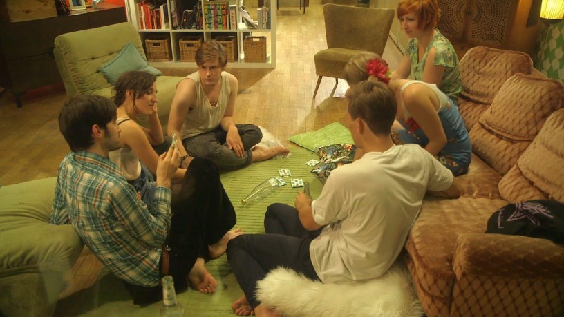

IMDB-Wertung: 4.9 / 10
IMDB-Wertung: 4.9 / 10  Metascore:
Metascore: 
Six people, one room, one night, one dinner, a lot of sensuality and much to discover. A film that shows how bodies and minds might meet, when allowed to.
 IMDB-Wertung: 4.9 / 10 Metascore:
Six people, one room, one night, one dinner, a lot of sensuality and much to discover. A film that shows how bodies and minds might meet, when allowed to.
Jahr: 2013
Dauer: 72 Minuten
FSK: 16
Land: Deutschland Studio: LauramediaTonspuren: AAC2.0 - ,
Untertitel:
Auflösung: 720p (1280x720) Größe: 1781 MB
Genre: Komödie, Dokumentation
Regisseur: Maike Brochhaus
Drehbuch: Matthew Holmes
Soundtrack:
Darsteller:
Datei: X:\2013(G-H)\Häppchenweise (2013, FSK16, 1280x720).mp4 seit 25.04.2017
Festplatte: HD 2012(N-Z)-2013(A-H)
 Es gibt insgesamt 43 Filme in der Gruppe '2013(G-H)'
Es gibt insgesamt 43 Filme in der Gruppe '2013(G-H)'